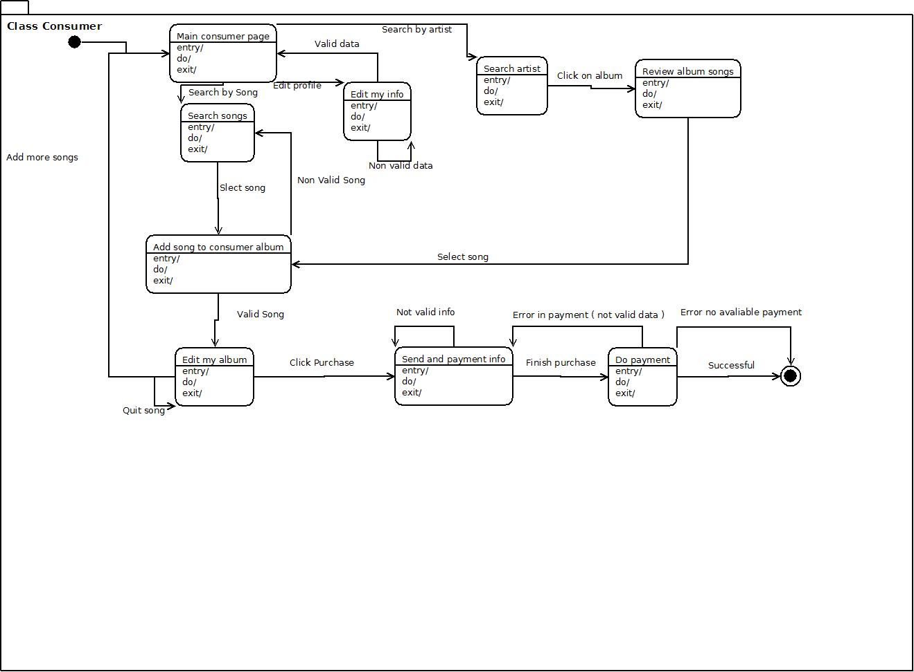
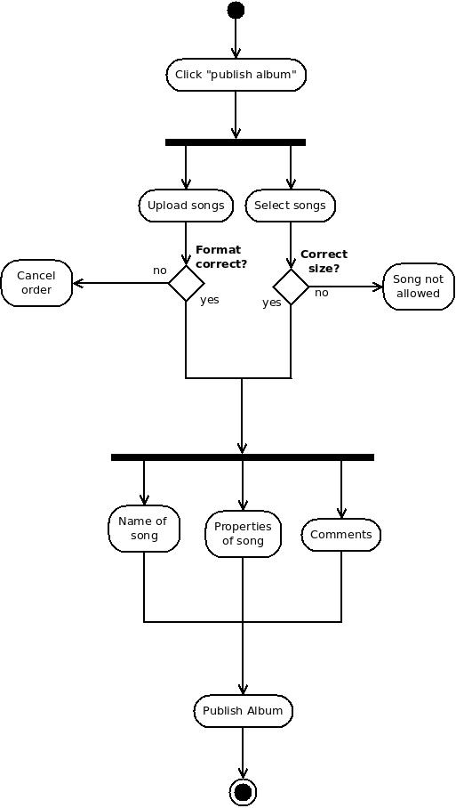
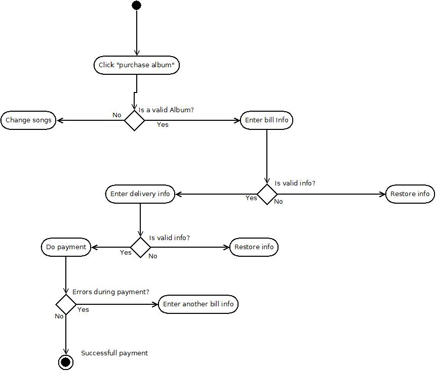
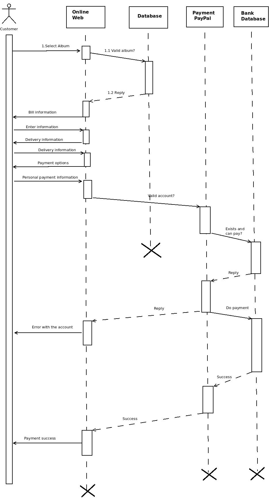

Music consumers: the most part of the users that will use the web. We will need to design all the architecture of the system
keeping in mind their necessities.
SingAlong employees: they will be able to change the information and maintain the web , beeing able to fix any conflict.
PayPal: We will use their API, so if they change something maybe we should change the cashier method.
Postal Service: we adjust to the mail proccess so if changed we need to kepp in mind.
Record label: they specify prices and methods of payment to them.
Artists: should be easy to them to promote their products.
Domain Requirements
Glossary
Specific terms
List of artist: We will have a top-10 artist list and another one with artists related with each user style.
List: We use a list of songs to create an album.
Albums: songs are organised in albums. Customers can buy albums , custom albums with songs of diferents artists
and listen them through streaming
Format of songs: songs need to be updated in Wav format and can be downloaded in mp3 ang ogg. It is needed to
be possible to add differents formats.
Users: not only refer to costumers , also for artist.
Music Style: it's used to relate artists and users, the style will determinate the actions of users
Promotional material: it's used to promote new songs or albums from an artist with photos, text or videos
Player: Songs can be streamed in the web
General terms
Stakeholders: a person or entity that has a say in the development of the system. Examples include: future users, domain experts,
clients, existing software maintenance team, maintenance specialists for similar software on the market ...
Use case: a service offered by the system with an associated set of functional requeriments.
Actor: an entity external to the system (either a person or another software system) that initiates a use case.
Functional requirements: Tell specifically the functionality of the system
Non-functional requirements: Describe the restrictions on the system
Domain requirements: Limitations of the application or the environment in which we'll operate
Non-Functional Requirements
Product
Usabilty
The Consumer should become confortable with the web page in less than 4 days, the Artist in 5 days and the Operator in 5 days
The users should search more times artists through the lists that have in their personal page than through the search bar
When an Artist is confortable with the web page, he should be able to upload a new song or album in less than 5 min
When a consumer purchase an album, it shouldn't take more than 3 minutes
Efficiency
A search in the search bar can't take more than one second
The response of the server can't be longer than one second
The number of Users that can register shouldn't be less than one milion
The number of Songs that can be uploaded shouldn't be less than 500 thousand
Robustness
The number of times that user go back in a window because of an error (one after the other), can't be more than 3
After 15 minutes of the server shutted down, it has to be up
Portability
The platform should be operative in Android, iOS, Windows, Linux, Macintosh
The data base should be stored in several servers
Organizational
Deliverables
Every two weeks the developers have to deliver new proper software
Every month will be a meeting between the client and developers
Every day will be a meeting between Software developers and the coach
Implementation
The system should be developed with C++, HTML, MySQL, Javascript, CSS
Standards
Delivers of each 2 weeks should be made throw a commit in github. And send the id of the commit to all participants
External
Interoperability
Shoud be able to interact with PayPal interface without problems.
The system need to guarantee that any purchase will be recived in less than 1 week. The postal service and the method of doing the request to them should be quickly.
Ethics
Should be guarantee that artist will upload only their own songs.
Social
The web page can't allocate offensive songs, comments or any kind of data for any user.
The platform should be accesible to all kind of people
Legislative
The system should guarantee the intellectual property.
State Diagram: Consumer Class

Activity Diagram: Publish Album

Activity Diagram: Purchase Album

Sequence Diagram: Purchase Album

Diagram:
Domain Requirements in text format
We don't know how the users will pay in the system, so the payment service should be an
entity and the specifics ways of payment will inherit.
Consumers are directly related with artists by the lists of the main page